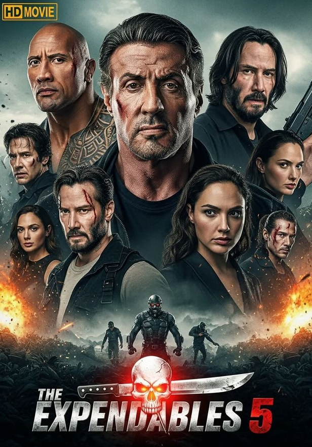
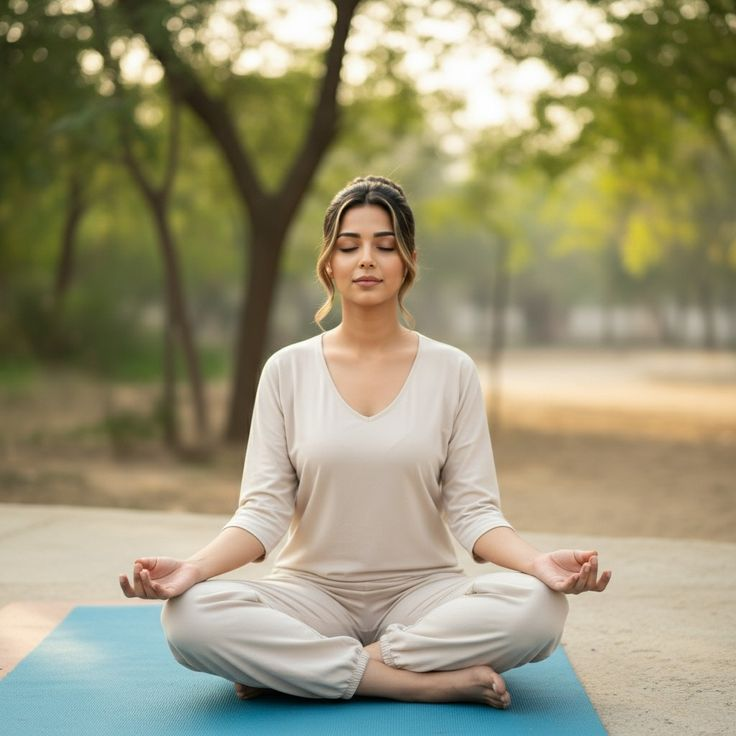

Voici mes divertissements
Ecouter de la musique
J'aime écouter de la musique en tout genre pour me détendre ; j'aime aussi écouter de la musique pour me motiver à faire du sport ou à faire du travail. Mes musiciens préférés sont : Gims, Booba, Ninho, Fally Ipupa, Kaba-Lad, Franglish et La Fuine.

Apprentissage en programmation
Je me diverti de fois en apprenant de nouvelles technologies et en résolvant des problèmes de programmation. De fois, même en dehors de la programmation, donc en informatique générale comme le réseau, la cyber sécurité et autres.
Jouer aux jeu
De fois je passe mon temps libre à jouer aux jeux juste pour m'amuser. J'aime beaucoup les jeux de course, peu importe les matériels de course (moto, velo, voiture, ...). Aussi jouer à des jeux de société, j'aime bien.

Regarder des films et series
Je me diverti aussi les soirs et jours fériés en redardant des films. Dans mon habitude, je regarde seulment des séries comme par exemple : Beauty In Black, Vickings, BMF, Prison Break, Fatal Seduction et bien d'autres de ces genres.

Pratiquer du YOGA
Je suis pas accro aux sports ou autres activités physiques à part pratiquer du Yoga, je crois que ça m'apporte du bonheur et un appaisement spirituel. Aussi comme j'aime tant me plonger dans le font de l'esprit, c'est une activité qui me rapproche de mon vrai moi.
Faire des paris
J'aime aussi faire des paris, pas concernant les matchs, mais d'autres jeux comme l'Aviator, les jeux des cartes et/ou les jeux des dés.